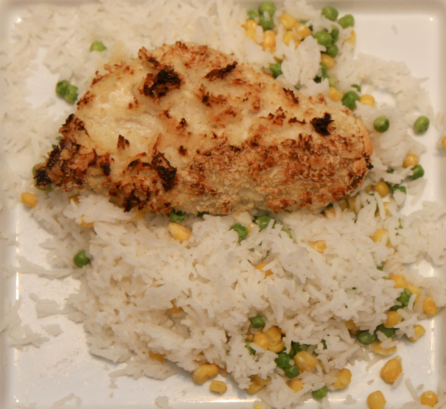

Baked Chicken

Description
This recipe combines exquisite taste with simplicity. It is an easy-to-make, yet delicious meal full of protein and carbs to fuel your day.
Ingredients:
- chicken breasts
- white rice
- garlic salt
- fajita chicken rub
- grape seed oil spray
Steps:
- Preheat oven to 375
-
Prepare chicken
- cut fat off breasts
- place them on baking tray lined with foil
- spray with grape seed oil
- lightly cover with garlic salt
- generously cover with fajita chicken rub
- place in oven for 40 mins
-
Prepare white rice
- wash 3 cups of white rice, then add to pot
- add 4 cups of cold water
- turn burner on High until boiling, then place lid on and turn to low for 11mins
- allow chicken to sit for 5mins after pulling from oven to continue cooking
- serve 225g of white rice and 6oz of chicken and enjoy!
Home